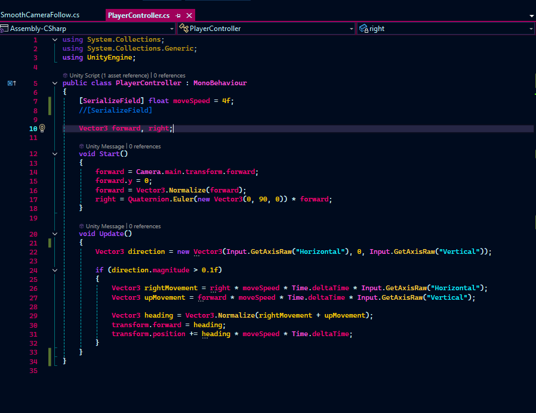

Understanding Game Mechanics
This website explains the concept of game mechanics, which are the rules and systems that govern how a game operates. Game mechanics are essential for creating engaging and enjoyable gaming experiences.

What are Game Mechanics?
Game mechanics are the rules and systems that govern how a game operates. They define the interactions between the player and the game world, as well as the challenges and rewards that players encounter. Examples of game mechanics include combat systems, progression systems, and randomness.
Why are Game Mechanics Important?
Game mechanics are crucial for creating engaging and enjoyable gaming experiences. They provide structure and challenge to a game, keeping players interested and motivated to continue playing. Well-designed game mechanics can also enhance immersion and create memorable moments for players.
Types of Game Mechanics
There are many different types of game mechanics, each serving a unique purpose in game design. Some common types include combat mechanics, which govern how players engage in battles; progression mechanics, which track player growth and development; and randomness mechanics, which introduce unpredictability and replayability to games.
Mechanics in Action
Examples of game mechanics in gameplay.